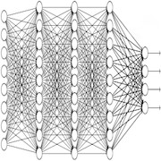
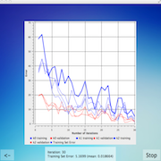

Facial recognition among profiles Github Github
Detect whether a person is wearing sunglasses using a collection of profile pictures of different individuals. Each person has pictures taken from different head angles, displaying different emotions, and with or without sunglasses.
C++, Qt, OpenCV
The purpose of this project, which originates from Tom Michell's book "Machine Learning", is to classify a set of profile pictures of different individuals. Each person has pictures with varying head positions, emotions, and the presence or absence of sunglasses. Our objective was to detect whether a person is wearing sunglasses or not. We have implemented a complete artificial neural network, available on Github, using backpropagation to compute the error. We have improved our system to optimize the success rate. Additionally, we have developed various validation methods, including a normal approach with one training set and one validation set, as well as k-fold cross-validation. A GUI has been developed using the Qt framework.
The Project
Profile images
Our dataset comprises images of 40 students enrolled in the course taught by Tom Mitchell. Each student possesses 32 pictures depicting them with various head positions (e.g., top, right), emotions (e.g., neutral, happy), and with or without sunglasses. As a preprocessing step, we employed binary Otsu's segmentation to convert the images from grayscale to binary, enabling each pixel to have only two possible values.
Artificial neural networks Github
We have implemented our own feed-forward neural networks, utilizing backpropagation to propagate the error, momentum to improve convergence, and random weight initialization. Additionally, we have implemented all the necessary functions to perform cross-validation, data shuffling, and data splitting.
Training
To learn the different weights and neural network parameters (such as the number of hidden layers, number of neurons, etc.), we utilized cross-validation with training, validation, and testing sets. The training set was used for learning, the validation set for parameter tuning, and finally, the testing set for approximating the generalized error (which should be unbiased).
Miscellaneous
| Type | Course project |
| Degree | B.Sc. HE-Arc, 3rd year |
| Course | Image processing |
| Duration | ~30 hours |
| Supervisor | Prof. François Tièche |
| Co-developer | Alexandre Perez |